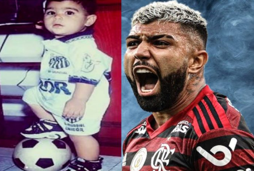

<!DOCTYPE html>
<html lang="pt-br">
<head>
    <meta charset="UTF-8">
    <meta name="viewport" content="width=device-width, initial-scale=1.0">
    <meta http-equiv="X-UA-Compatible" content="ie=edge">
    <title>Document</title>
    <link rel="stylesheet" href="estilo.css">
</head>
<body>
    
</body>
</html>
<html>

<head>
    <meta name="viewport" content="width=device-width, initial-scale=1">
    <style>

    </style>
</head>

<body>

    <div class="sidenav">
        
        <a href="sobre.html">Sobre</a>
        <a href="trag.html">Trajetória </a>
        <a href="Base.html">Base</a>
        <a href="https://www.instagram.com/gabigol/?hl=pt-br"></a>
        <a href="https://www.facebook.com/gabigol"></a>
    </div>
<div class="col col 4">
    <div class="main">
        <h2>Quem é Gabigol?</h2>
        <p>Nascido em 30 de agosto de 1996, Gabriel Barbosa de Almeida, comumente conhecido no futebol como Gabigol, é um jogador brasileiro de futebol que atua como atacante.Sua carreira começou pelo Santos Futebol Clube no ano de 2013, mas só conquistou todo o reconhecimento após jogar pelo Flamengo, time o qual joga atualmente. Além de suas habilidades em campo, o jogador de 1,78 ficou nacionalmente reconhecido por seu estilo moderno e esportivo. Sempre mudando de visual e inovando-o!</p>
       
    </div>
</div>
</body>

</html>